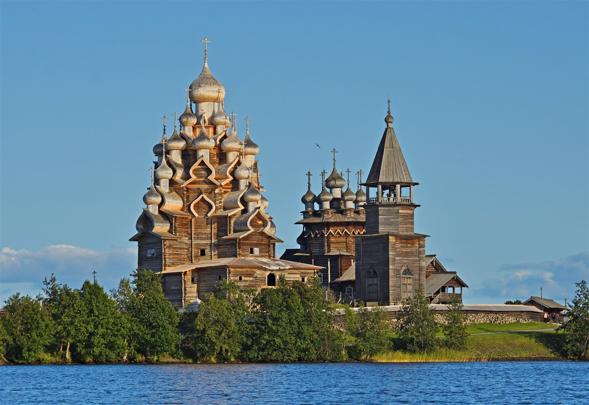

Раздел 8
Источники и медиатека
Эта страница делает проект прозрачным: показывает, на какие типы материалов можно опираться при создании конкурсного сайта о культуре и почему реальные источники повышают доверие к работе.

Методика
Как был собран проект
Медиатека
Какие материалы работают внутри сайта
Официальные ресурсы
Музеи, библиотеки и цифровые коллекции
Визуальные кредиты
Ключевые фотографии и их происхождение
Этика работы